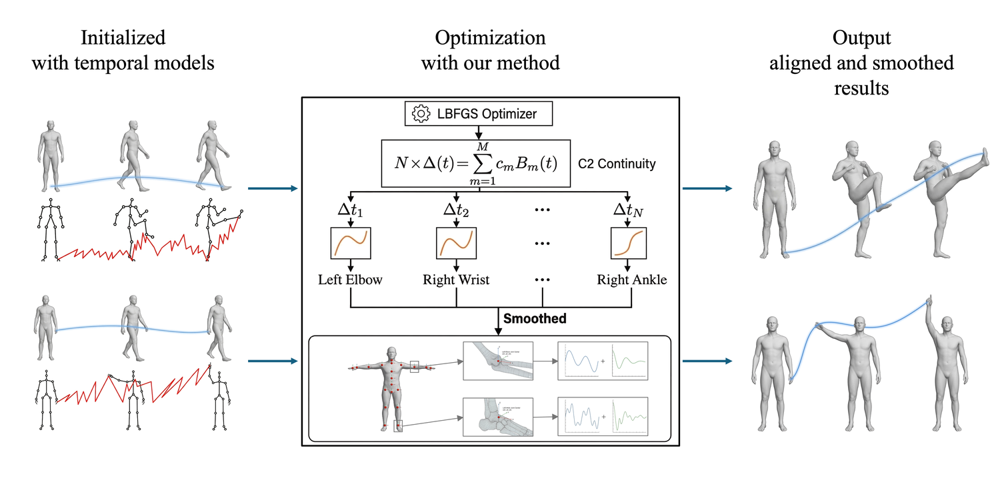

SplineHMR: A Universal B-spline Prior for Temporally Stable SMPL Refinement
The paper has been accepted to ACM Multimedia 2026. The ACM DL page is not live yet; DOI assigned: 10.1145/3767308.3835749.
TL;DR
- SplineHMR refines existing HMR sequences by representing pose and camera corrections as smooth B-spline trajectories.
- Spline-Opt performs direct test-time optimization in the B-spline control space for better image alignment with less jitter.
- Spline-Diff plugs the same B-spline prior into ScoreHMR's diffusion sampling process, making diffusion-based refinement more temporally stable.
Abstract
SplineHMR is a representation-level temporal prior for refining human mesh recovery results from monocular videos. Test-time refinement is often useful for improving 2D alignment, but frame-wise optimization can introduce unnatural temporal jitter. We address this by constraining the refinement updates to a low-dimensional B-spline trajectory subspace.
Given an input motion sequence, SplineHMR optimizes or samples smooth control-point trajectories and decodes them into dense per-frame corrections for body pose and camera parameters. The prior is independent of a particular HMR backbone, making it easy to attach to different refinement pipelines. In this work we instantiate it as Spline-Opt for optimization-based refinement and Spline-Diff for diffusion-based refinement.
Demo
The demo starts from precomputed SMPL-X results and refines the sequence with Spline-Opt. Red shows the input mesh before refinement; green shows the optimized mesh. The overlay highlights that the refined result improves alignment while preserving coherent temporal motion.

Method
The central design is simple: expose B-spline control points to the refinement algorithm instead of independent frame-wise variables. Since neighboring frames share the same control points, the output corrections are naturally smooth, but still flexible enough to follow image evidence.

Spline-Opt
Spline-Opt performs LBFGS refinement over B-spline control points. It is lightweight at inference time and works directly on an existing motion estimate, such as the precomputed SMPL-X sequence used in our demo.
Spline-Diff
Spline-Diff applies B-spline projection during ScoreHMR sampling. Instead of treating sampled clean states as independent frames, it projects them toward a temporally structured subspace and blends the projected result back into the DDIM loop.


Main Results
We report 2D reprojection error, temporal acceleration error, MPJPE, PVE, and runtime. The two tables correspond to the two ways we instantiate the B-spline prior: direct optimization (Spline-Opt) and diffusion-time projection (Spline-Diff). Lower is better for Reproj., Accel., MPJPE, and PVE; higher is better for FPS.
Spline-Opt refinement
| Method | FPS ↑ | Reproj. ↓ | Accel. ↓ | MPJPE ↓ | PVE ↓ | |||
|---|---|---|---|---|---|---|---|---|
| 3DPW | EMDB | 3DPW | EMDB | 3DPW | EMDB | |||
| Initializer: GVHMR | ||||||||
| GVHMR | -- | 19.2 | 6.1 | 4.4 | 62.7 | 58.4 | 69.4 | 69.8 |
| +SmoothNet | >5000 | 26.9 | 5.1 | 4.2 | 78.8 | 56.9 | 84.4 | 70.6 |
| +ScoreHMR | 47 | 16.0 | 13.2 | 16.6 | 59.8 | 59.3 | 64.4 | 67.4 |
| +SMPLify-X | 1 | 23.5 | 50.1 | 68.3 | 82.4 | 147.0 | 83.8 | 154.3 |
| +Ours (Spline-Opt) | 241 | 12.9 | 5.7 | 4.2 | 57.1 | 56.6 | 64.4 | 66.8 |
| Initializer: WHAM | ||||||||
| WHAM | -- | 22.7 | 8.2 | 6.9 | 59.6 | 60.4 | 65.9 | 71.7 |
| +SmoothNet | >5000 | 25.6 | 5.9 | 6.6 | 85.3 | 56.8 | 87.6 | 66.5 |
| +ScoreHMR | 37 | 16.0 | 14.2 | 18.0 | 53.0 | 57.0 | 59.2 | 66.3 |
| +Ours (Spline-Opt) | 149 | 13.8 | 7.7 | 6.6 | 55.4 | 58.6 | 61.4 | 67.8 |
Spline-Diff refinement
| Method | FPS ↑ | Reproj. ↓ | Accel. ↓ | MPJPE ↓ | PVE ↓ | |||
|---|---|---|---|---|---|---|---|---|
| 3DPW | EMDB | 3DPW | EMDB | 3DPW | EMDB | |||
| Initializer: GVHMR | ||||||||
| GVHMR | -- | 19.2 | 6.1 | 4.4 | 62.7 | 58.4 | 69.4 | 69.8 |
| +SmoothNet | >5000 | 26.9 | 5.1 | 4.2 | 78.8 | 56.9 | 84.4 | 70.6 |
| +ScoreHMR | 47 | 16.0 | 13.2 | 16.6 | 59.8 | 59.3 | 64.4 | 67.4 |
| +ScoreHMR (smooth loss) | 34 | 15.9 | 10.6 | 13.3 | 59.7 | 59.5 | 64.4 | 67.7 |
| +Ours (Spline-Diff) | 41 | 15.3 | 5.7 | 5.3 | 60.6 | 57.1 | 65.4 | 67.3 |
| Initializer: WHAM | ||||||||
| WHAM | -- | 22.7 | 8.2 | 6.9 | 59.6 | 60.4 | 65.9 | 71.7 |
| +SmoothNet | >5000 | 25.6 | 5.9 | 6.6 | 85.3 | 56.8 | 87.6 | 66.5 |
| +ScoreHMR | 37 | 16.0 | 14.2 | 18.0 | 53.0 | 57.0 | 59.2 | 66.3 |
| +ScoreHMR (smooth loss) | 39 | 16.0 | 10.9 | 13.8 | 52.8 | 56.7 | 58.9 | 65.9 |
| +Ours (Spline-Diff) | 30 | 14.8 | 5.8 | 5.5 | 53.1 | 56.5 | 58.7 | 65.2 |
Qualitative Results
SplineHMR is designed for the alignment-stability trade-off: it should improve the fit to visual evidence without causing frame-to-frame artifacts. The qualitative comparison below shows representative fitting results from the paper.

Video
Citation
If you find SplineHMR useful, please cite:
@inproceedings{li2026splinehmr,
title = {SplineHMR: A Universal B-spline Prior for Temporally Stable SMPL Refinement},
author = {Li, Tengwei and Li, Jiaen and Zhang, He and Yu, Tao and Ji, Mengqi},
booktitle = {Proceedings of the 34th ACM International Conference on Multimedia (MM '26)},
year = {2026},
address = {Rio de Janeiro, Brazil},
publisher = {Association for Computing Machinery},
doi = {10.1145/3767308.3835749},
isbn = {979-8-4007-2213-4/2026/11}
}